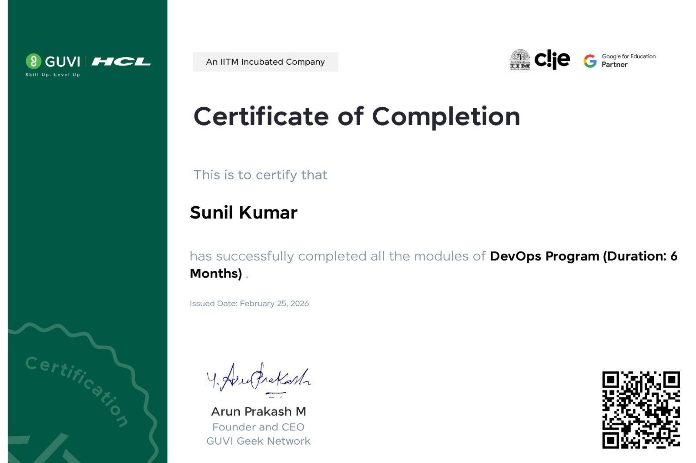
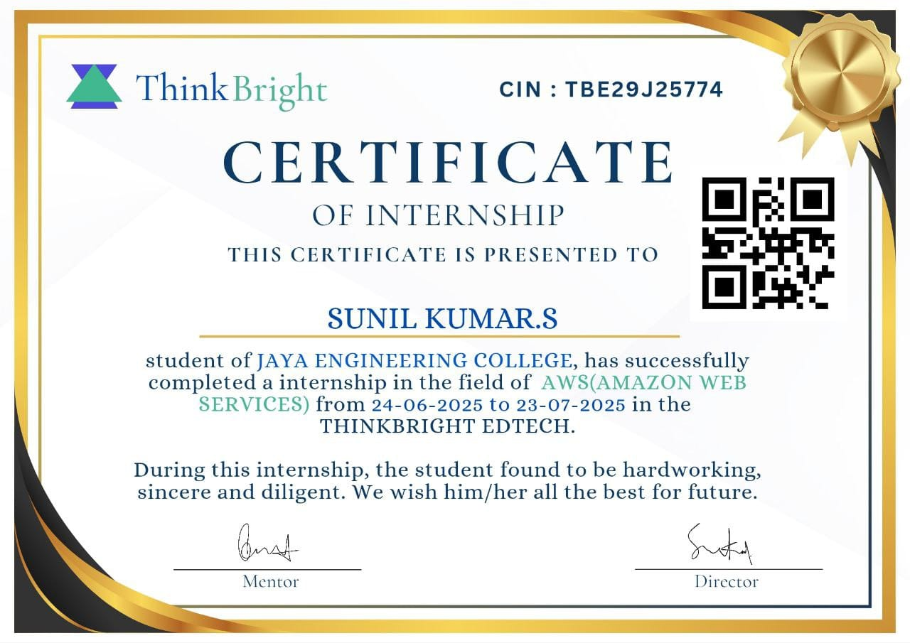

Passionate DevOps Engineer specializing in AWS, Docker, Kubernetes, Jenkins, Terraform and Cloud Infrastructure. I build scalable, secure and automated deployment pipelines.
Motivated DevOps Engineer with strong knowledge of CI/CD, AWS Cloud, Docker, Kubernetes, Jenkins, Terraform, Linux, Git, Infrastructure as Code, Configuration Management and Monitoring. Passionate about building scalable, secure and reliable cloud infrastructure while automating software delivery.
Fresher
Chennai, India
B.Tech Information Technology
Full Time
Designed and deployed a scalable React application on Amazon EKS using Docker, Amazon ECR, AWS CodeBuild and AWS CodePipeline with a fully automated CI/CD workflow and CloudWatch monitoring.
Built a production-ready CI/CD pipeline for a React application using Jenkins, Docker, Terraform, Amazon EKS, Prometheus, and Grafana with automated deployment and monitoring.
Designed and deployed a production-ready React application on AWS EC2 using Jenkins, Docker, Docker Compose and Docker Hub with automated CI/CD and monitoring using Prometheus & Grafana.
Built a production-ready CI/CD pipeline for a Java application using Jenkins, SonarQube, Nexus, Trivy, Docker and Amazon EKS with automated build, security scanning and deployment.
Jaya Engineering College
2022 – 2026
CGPA : 8.5

Successfully completed the DevOps Program covering AWS, Docker, Kubernetes, Jenkins, Terraform, Linux and CI/CD practices.

Successfully completed AWS Cloud Internship at ThinkBright EdTech and worked on cloud infrastructure deployment and automation.